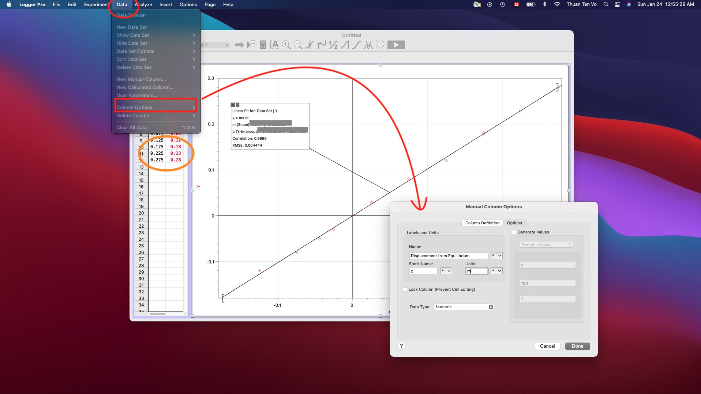

Pre Lab 1¶
In this section, you will find the hints to your pre lab! Remember that I have you as many hints as I could. So please do not cheat!
Overview¶
There are 2 parts in this pre lab assignment.
Part 1: True/False
Part 2: Data Import and Analysis
It is worth 2 points and due before lab 1 (11: 59PM PST January 28th, 2021)
Part 1¶
Recall what happens if a string is stretched or compressed. More specifically, what is its tendency to react to such events?
The next question is just a simple force identification right?
Part 2¶
Step 1: Take the data and put it in Logger Pro table (left panel)
Step 2: Select Analyze > Linear Fit.

Step 3: A box appears. Make sure it shows uncertainties (double click it for settings).
Step 4: Change x- and y-axis label (Name and Units) by Data > Column options.

Step 5: Extract your k values. Where? Look into this formula: \( \color{red}F \color{red}= \color{red}k \color{red}* \color{red}|\color{red}\Delta \color{red}x\color{red}| \)
Hint
k is a constant with respect to each type of spring. So, which term in the equation is kept constant? Then, where is it in LoggerPro fit box?
Step 6: Repeat it for the second table
Step 7: Write down the results
Note
Ignore uncertainties are not included in the table. Why? It is not used for calculation.